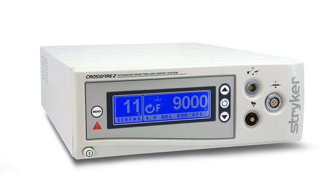
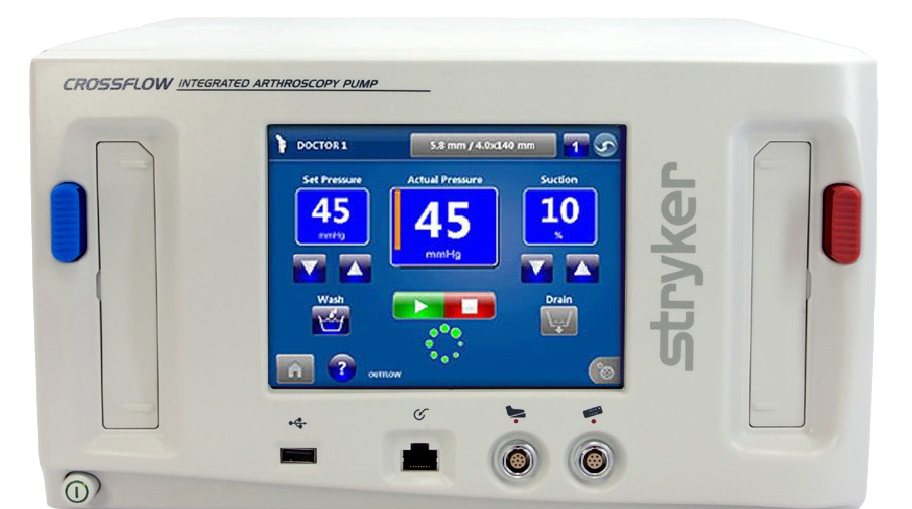
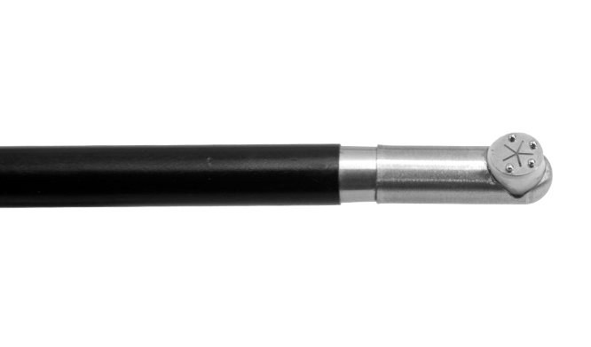
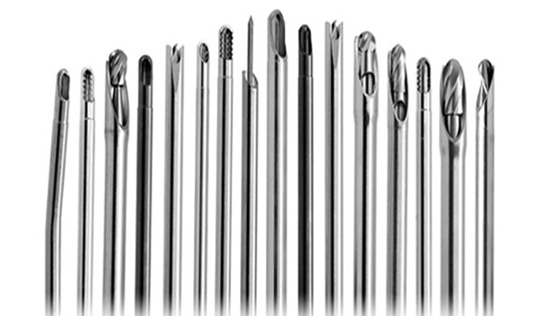
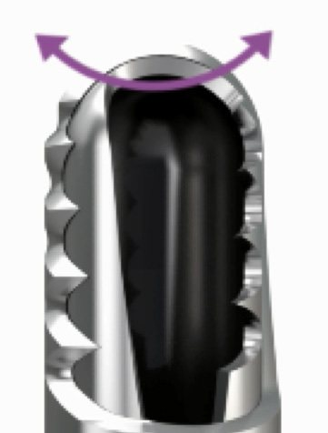
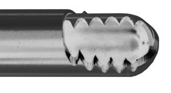

02
Resection · RF · Fluid
Shaver · RF · 관류 펌프를 하나의 프로필로

CrossFire 2
Shaver + RF 한 콘솔 · 통합 풋스위치
자세히 보기 ›
CrossFlow
Inflow/Outflow 펌프 · Wash · ReconiSense
자세히 보기 ›
SERFAS RF Probe
Plasma Ablation · Hip XL 프로브
자세히 보기 ›
Formula Cutters & Burs
Resector · Aggressive Plus · Tomcat · 품번표
자세히 보기 ›
CrossBlade · Diamond Bur
Laser-cut · Tomcat HC · Dual Edge
자세히 보기 ›
선택 가이드
수술 상황별 Cutter · Bur 추천
자세히 보기 ›03
Power · 동력 장비
High-Speed Drill과 System 9 Power Tools